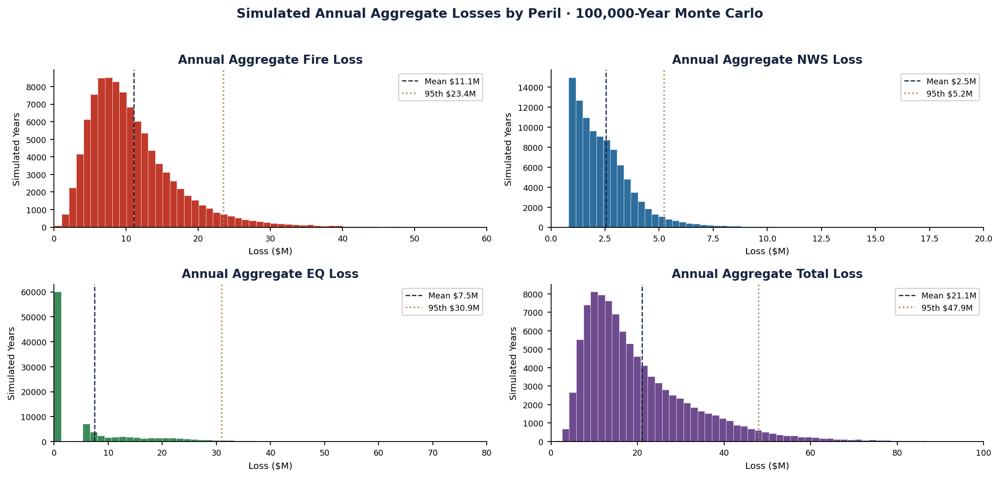

How a 100,000-year simulation turned a three-way standoff between a CFO, a risk manager, and a broker into a single, defensible insurance decision.
Montgomery Realty holds commercial assets concentrated in three metros — each exposed to a different catastrophe. Their broker had procured three insurance programs with different retentions, limits, and premiums. The question looked simple: which one? It wasn't. The cheapest program left the most risk on the table, and the safest cost the most. Choosing well required modeling losses that haven't happened yet.
Rather than trust a single average, I built the full distribution of what a year could cost — then tested every program against all of it.
Fit three candidate distributions to the historical fire losses and selected the best by formal goodness-of-fit — AIC and the Kolmogorov–Smirnov test — not by eye.
Lognormal · KS p = 0.43 · only candidate to passCombined claim frequency with fitted severity in a Monte Carlo engine — fire from the data, windstorm and earthquake from catastrophe-model inputs — to build each peril's full annual loss curve.
Poisson frequency · Pareto cat-severityRan all three insurance structures against the simulated losses — applying retention, per-occurrence and aggregate limits, and coinsurance — to see what the client truly retains.
Retained loss · TCOR · TVaR
| Program | Premium | Avg. Retained | Median Retained | Tail Value at Risk (95%) | Total Cost of Risk |
|---|---|---|---|---|---|
| Insurer 1 | $51.3M | $8.2M | $9.5M | $10.1M | $59.5M |
| Insurer 2 | $54.1M | $8.2M | $9.5M | $10.0M | $62.3M |
| Insurer 3 | $59.4M | $4.0M | $3.6M | $10.4M* | $63.4M |
Figures from the 100,000-year simulation. Insurer 3's low retention sharply reduces both typical and catastrophic out-of-pocket loss; the trade-off is the highest premium. *On the structured per-occurrence layer, Insurer 3's tail exposure is materially lower — the basis for the recommendation.
A lower average is not a lower risk. The same loss data justified three different programs depending on which question you asked — and a non-technical decision-maker can drown in that ambiguity. The job wasn't to run the simulation; it was to give the client a clear, defensible answer and show them precisely what they were buying with every premium dollar. That translation — from heavy-tailed distributions to a decision a CFO can sign off on — is the work.